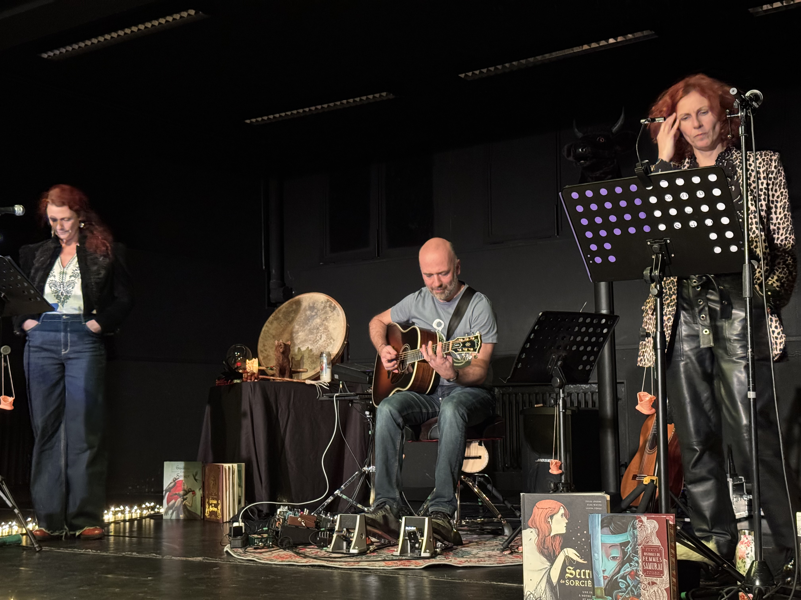

Le collectif Bette Davis regroupe deux compagnies, dont la compagnie
Étrange Été. Depuis plusieurs années, ce collectif rassemble les talents
de Maud Leroy et Béatrice Courtois, explorant différentes disciplines artistiques.
En mêlant chant, musique, théâtre et expression corporelle, elles créent des performances immersives.

Le Jeudi 17/10, nous avons assisté à une représentation autour de deux contes issus de traditions amérindiennes: l'histoire de la femme squelette et celle de la femme phoque. Accompagnées d'Arnaud, un musicien multi-instrumentiste, Maud et Béatrice ont donné vie à ces récits.

Les récits étaient accompagnés de musique, principalement à la guitare, mais aussi d'instruments rituels des mêmes tribus.

À l'issue des représentations, nous avons pu échanger avec les artistes sur leur manière d'aborder les récits. Nous avons également discuté des projets du collectif et des pistes de création autour du théâtre à l'EPID. Enfin, nous avons essayé l'oracle du peuple animal, un moment où chacun devait tirer une carte pour découvrir une prédiction inspirante lié au monde animal.

Le Jeudi 12/12, le collectif est revenu pour une deuxième session qui s'est articulée en deux temps. Tout d'abord, les élèves de Première ont présenté le travail qu'ils ont préparé avec le collectif. Chaque groupe a proposé une courte mise en scène originale, mêlant chant, musique et jeu théâtral.
Ensuite, Maud, Béatrice et Arnaud nous ont représenté leur nouveau spectacle: Sorcières. Ce spectacle, raconté sous la forme d'une lecture musicale explore la figure de la sorcière comme femme affranchie. C'est à travers de textes de plusieurs auteurs, comme Roald Dahl qu'il invite à suivre les pas de ces "sorcières".